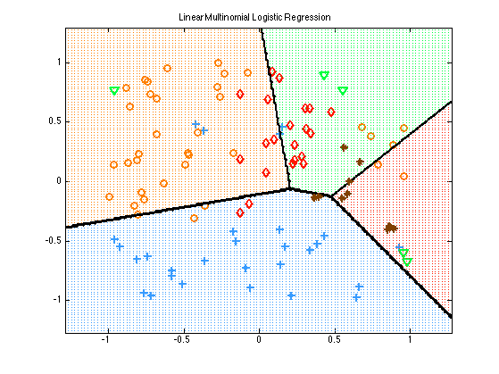
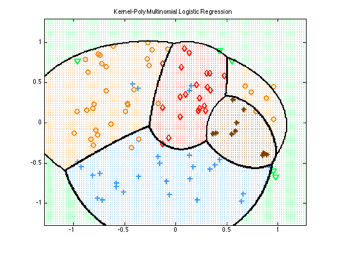
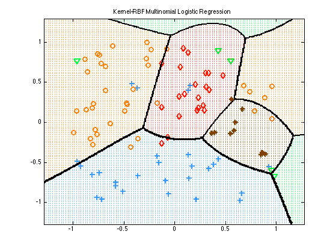

Multiclass Logistic Regression
In this demo, we fit a multiclass logistic regression model by first performing various basis expansions of the input features. This is a simplification of logregMultinomKernelMinfuncDemo.
Contents
% This file is from pmtk3.googlecode.com function logregMultinomKernelDemo()
Setup Data
setSeed(0);
nClasses = 5;
nInstances = 100;
nVars = 2;
[X, y] = makeData('multinomialNonlinear', nInstances, nVars, nClasses);
Settings
lambda = 1e-2; polyOrder = 2; rbfScale = 1;
No Kernel
modelLinear = logregFit(X, y, 'lambda', lambda);
fitkern = @(k, p)logregFit(X, y, 'lambda', lambda, ... 'preproc', struct('kernelFn', @(X1, X2)k(X1, X2, p)));
Polynomial
modelPoly = fitkern(@kernelPoly, polyOrder);
RBF
modelRBF = fitkern(@kernelRbfSigma, rbfScale);
Compute training errors
[yhat, prob] = logregPredict(modelLinear, X); %#ok trainErr_linear = mean(y~=yhat); fprintf('Training error with raw features: %2.f%%\n', trainErr_linear*100); [yhat, prob] = logregPredict(modelPoly, X); %#ok trainErr_poly = mean(y~=yhat); fprintf('Training error using a polynomial kernal of degree %d: %2.f%%\n', polyOrder, trainErr_poly*100); [yhat, prob] = logregPredict(modelRBF, X); trainErr_rbf = mean(y~=yhat); fprintf('Training error using an RBF kernel with scale %d: %2.f%%\n', rbfScale, trainErr_rbf*100);
Training error with raw features: 30% Training error using a polynomial kernal of degree 2: 14% Training error using an RBF kernel with scale 1: 18%
Plot decision boundaries
plotDecisionBoundary(X, y, @(X)logregPredict(modelLinear, X));
title('Linear Multinomial Logistic Regression');
 predictFcn = @(Xtest) logregPredict(modelPoly, Xtest);
plotDecisionBoundary(X, y, predictFcn);
title('Kernel-Poly Multinomial Logistic Regression');
 predictFcn = @(Xtest) logregPredict(modelRBF, Xtest);
plotDecisionBoundary(X, y, predictFcn);
title('Kernel-RBF Multinomial Logistic Regression');
 end